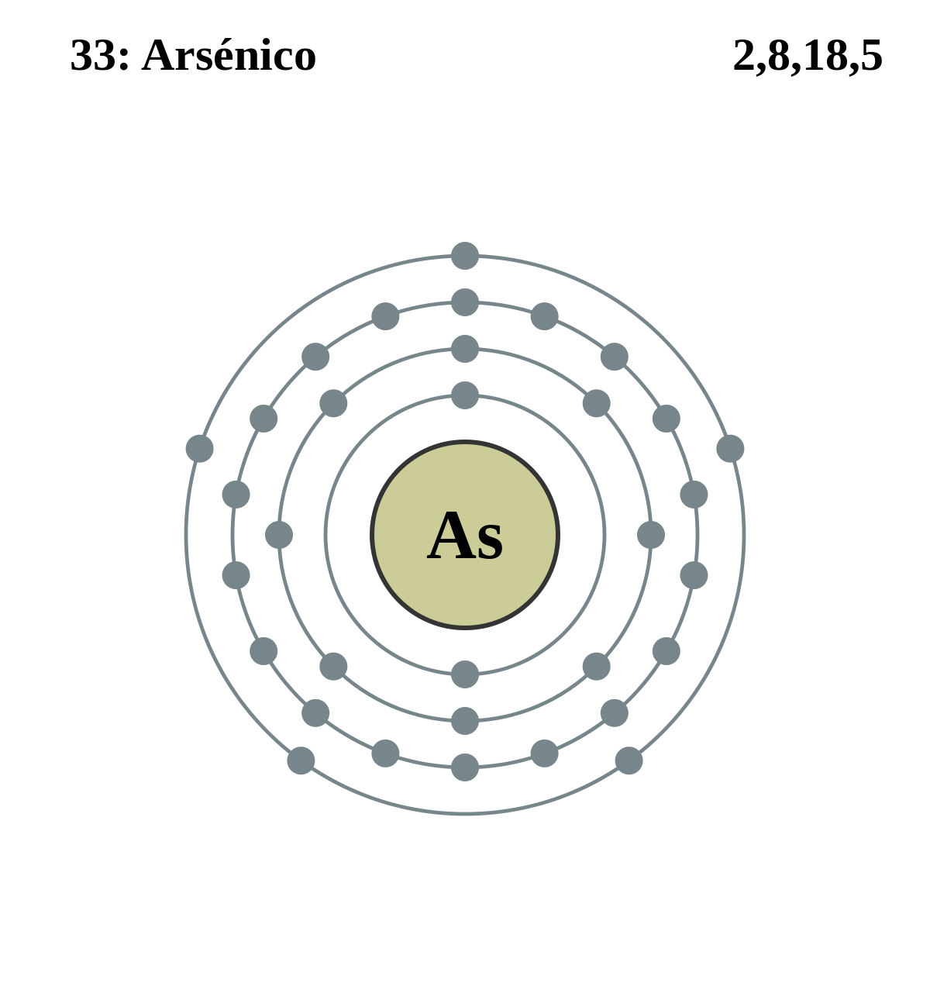

|
|
||
|
SELENIO El selenio se descubrió en 1817 y se encuentra en varias formas alotrópicas y con estructuras amorfas o cristalinas. Como parte de la familia del azufre, es similar a este en su forma y en sus compuestos. El selenio amorfo es rojo (forma de polvo) o negro (forma vítrea); la versión monoclínica cristalina es de color rojo oscuro y la forma hexagonal cristalina estable es de color gris metálico. El selenio puro contiene seis isótopos estables y se han encontrado otros quince. |
 |
DATOS Número Atómico: 34 Peso Atómico: 78.97 Electronegatividad: 2.55 Configuración Electrónica: [Ar]3d¹⁰4s²4p³ Estados de Oxidación: +4,−2,+6 No. de Electrones de Valencia: 6 |